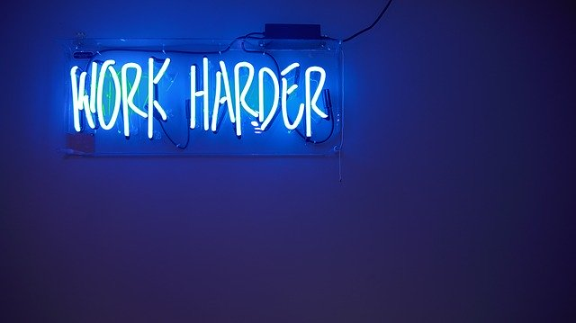

I've been working remotely now for about 2 years and I wanted to share what I've learned over this time. I've heard from many of my colleagues that working from home is too distracting and they aren't able to finish their work on time because of this. I can definitely see where they're coming from, however, I think with some small changes most people will be able to adapt to this way of working and they'll notice huge lifestyle improvements because of it. Here are just a few tips that I've picked up over time that allow me to work effectively from home.
Be sure to create your own space
Working from home can take a lot of self-discipline. It’s easy to get distracted by any number of things in your home. It’s important to reduce these distractions by creating your own quiet space to work in. This space should be isolated and relatively quiet; somewhere that you can hold meetings or work for longer periods of time without distraction. In my apartment, there will always be some level of noise due to the thin floors and walls, however when I close the door to my office I can hold meetings without too much outside noise interrupting the other participants. There are also several ways to dampen sound, which I will try to cover in another post.
When you are setting up your space it’s important to make it feel like a place you can stay in for long periods of time (because you will). Fill it with items that will motivate you

and be sure to include items that can increase your productivity either directly or indirectly. Calendars, notebooks, and sound dampening materials are all easy additions to boost your productivity. Your space should also be fun! Pictures of your family or small trinkets to admire during the day help relieve boredom and frustration.
Take short breaks every 1-2 hours
Working from home can sometimes give you too much uninterrupted time. I’ve often found myself working for several hours without taking a break, which of course isn’t ideal. I’m sure you’ve all heard about the dangers of sitting too long. Taking a short break every hour to walk around your home or stretch your limbs is essential for maintaining a healthy body and mind.
Avoiding headaches is another great reason to take short breaks. Staring at a computer all day long is a huge strain on your eyes and can lead to headaches or migraines. Besides taking short breaks, I’ve also found that using a comfort mode on your screen can really help. Apps like f.lux can help control the blue light your screen puts out, which is especially helpful if you must work late at night.
Working for long periods without a break can definitely lead to frustration. Stepping away from the computer will let your mind relax and can often lead to breakthroughs. I’ve often thought of solutions to a problem I’ve been stuck on for hours after just a short break. It can also help you break out of a cycle of testing the same solution over and over again.
The pomodoro technique is a great way to manage your time and force yourself to step away at regular intervals. It’s too easy to convince yourself to take breaks later and ultimately push them off completely. Using a physical timer to break out of the virtual world is a great idea that has helped me tremendously.
Try to keep consistent hours
When you work in an office you generally fall into a daily routine. Avoiding traffic or getting everything ready in the morning combined with getting ready for bed at night generally forces people to wake up and fall asleep around the same times each day. Working from home, however, allows you to have greater flexibility with your schedule. Within minutes you can wake up and sign into your work computer. This greater flexibility is an attractive part of working from home, but it can lead to a highly varied daily schedule. It’s easy to stay up late when you don’t have a long commute and you can also convince yourself to either wake up much earlier or later each day depending on what you need to accomplish that day. Consistency is key for maintaining productivity at home. Try to avoid waking up and immediately signing into work. Give yourself time to wake up and get ready. You don’t want to get sucked into a long conversation or meeting before you’ve even prepared yourself to take on the day.
Maintaining a consistent schedule leads to my next point of setting a reasonable work schedule. There can sometimes be an expectation of working longer hours because you have the luxury of working from home. Don’t fall victim to this mindset. It’s important to set a schedule that works for yourself and your team without overdoing it. It’s easy to work 10-12 hour days because you are already in the comfort of home. This can quickly lead to burnout though so make sure you set your hours and stick to it. If you have non-critical work, it’s okay to leave it until the next day.
Keeping the same, or similar, schedule each day will also help your colleagues know when they can reach you. This can be helpful in case they have something important to run by you or they need to schedule a meeting.
Make sure to reach out to your colleagues
I’ve always found it easier to work with people that I’ve developed a relationship with. Simple conversations each day can help build a friendly rapport, which will help you in the future if you need to collaborate or ask for their assistance. It also helps your entire team when you all get to know each other. Learning each other’s strengths and weaknesses is an essential component of high performing teams. When you need to swarm on an issue or new feature it’s helpful to know who has prior experience with that work and who could use some more guidance.
Sometimes it can be easy to make it through a day, or even several days, without reaching out to anyone on your team. Besides daily standups (if you have them), it’s important to check in on people to see how they are progressing with their work. They may not need any help at the moment but I’m sure they would appreciate you asking them about it. It can also frequently lead to more casual conversations, which will let you get to know your team members better.
It can also be lonely working at home. It’s important to make time for social activities or even just getting out of the house and being around other people. When you are in the office you are able to talk to numerous people throughout the day and you are in an environment surrounded by other people. It’s easy to go through long stretches of time without talking to anyone else (if you live alone) or only talking to the few people you may live with. Even for very introverted people, like myself, it’s important to have that social time each week even if it’s only for a brief time.
Take advantage of this great opportunity
The final point I was wanted to address is taking advantage of this great opportunity. Whenever I tell my friends or family about my remote position, they are all jealous. This really is a great opportunity and you should take full advantage of it. I mentioned before how it’s important to take short breaks every hour and this is a great time to get some small chores done around the house. You would be amazed with how much you can accomplish during those short 5-10 minute breaks and once you finish work you no longer have to worry about it! You can also use your breaks to spend time with your family. Having a short conversation with your family can help to relieve a lot of stress and take your mind off work, leaving you feeling refreshed and ready to get back to work.